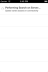
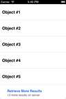
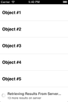

UITableViewController subclass that adds status and manual paging functionality.
View the Project on GitHub FernGlow/FGPagedTableViewController
FGPagedTableViewController is a UITableViewController subclass that adds status message and paging functionality. It was modeled after Apple's server-side search functionality in the iOS Mail app.
| Status Message | Paging | Paging in Progress |
|---|---|---|
|  |  |  |
@interface ExamplePagedTableViewController : FGPagedTableViewController <FGPagedTableViewControllerDelegate, FGPagedTableViewControllerDataSource>
- (UITableViewCell *)pagedTableView:(UITableView *)tableView resultCellForRowAtIndexPath:(NSIndexPath *)indexPath
{
UITableViewCell *cell = [tableView dequeueReusableCellWithIdentifier:@"CellIdentifier" forIndexPath:indexPath];
// configure cell properties
return cell;
}
- (NSInteger)numberOfRowsInPagedData
{
// return number of items to be paged through
}
- (void)pagedTableView:(UITableView *)tableView didSelectPagingCellForRowAtIndexPath:(NSIndexPath *)indexPath
{
// request a new page of data
}
PageInfo *pageInfo = [[PageInfo alloc] init];
// configure pageInfo properties
self.pageInfo = pageInfo; // triggers updates to the tableView, do this last.
FGPagedTableViewController uses ARC and modern Objective-C features such as auto-synthesize, literals and subscripting. Thus, it must be compiled with Apple LLVM 4.0+.
FGPagedTableViewController is available under the MIT license. See the LICENSE file for more info.
{kind=link}
{kind=link}
{kind=link}